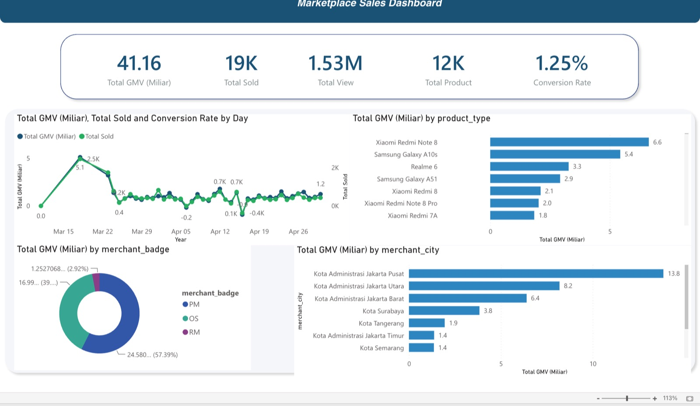
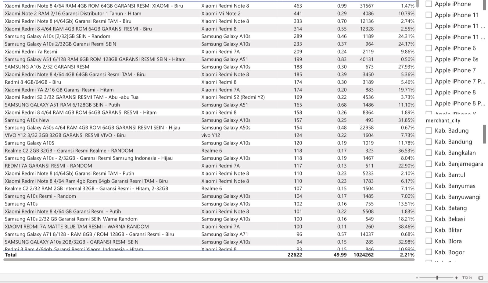

01Problem
The raw marketplace export had missing values, duplicates, inconsistent data types, and unstandardized column names, so it could not be analysed reliably as it was. The goal was to turn it into trustworthy analytical data and dashboards that show marketplace performance: GMV, sales, product views, merchant contribution, and conversion rate.
02Data / Context
A Kaggle dataset of smartphone listings from an Indonesian online marketplace, delivered as CSV. It covers product, brand, price, stock, rating, reviews, sales, product views, merchant city and badge, and revenue estimates. The same dataset was used in all three courses, so each course built on the same raw data.
- 12,120listings
- 4,094merchants
- 11smartphone brands
03Approach
Two tracks start from the same raw data: a group data engineering pipeline, and individual analysis in Python and Tableau.
Data engineering pipeline (group)
- Raw CSVKaggle export
- StagingLoaded as is with Pentaho
- ProcessedCleaned and validated
- AnalysisStar schema in MySQL
Raw data stays untouched in staging, so any step can be re-run from the original.
- Cleaning and validation: missing values, duplicates, format fixes, type conversion, numeric checks, and standardized categories such as product type, merchant badge, and merchant city.
- Orchestration: one Pentaho Job runs the steps in order, and each step starts only after the previous one succeeds: data cleaning, then the product, merchant, and date dimensions, then the fact table.
- Power BI report: an executive page with GMV, units sold, product views, product count, and conversion rate, broken down by day, product type, merchant badge, and merchant city; and a product-level detail page with a filterable SKU table.
DIM_MERCHANT
- merchant_code
- merchant_city
- merchant_badge
DIM_DATE
- date
- day
- month
- month_name
- year
FACT_SALES
- sales_id
- date
- merchant_code
- product_id
- daily_gmv
- daily_sold
- daily_view
DIM_PRODUCT
- product_id
- product_type
- sku_name


Analysis and visualization (individual)
- Python: analysis starting from the raw data.
- Tableau dashboard: KPI tiles for GMV, units sold, views, listings, rating, and reviews; weekly GMV by merchant badge; top brands and products by GMV; GMV by price band; and filters for week, brand, merchant badge, price band, and merchant region.
04Tools
- Pentaho (PDI)
- Ingestion, cleaning, and job orchestration (group)
- MySQL
- Staging, processed, and star-schema layers (group)
- Power BI
- Two-page report with DAX measures (group)
- Python
- Analysis from raw data (individual)
- Tableau
- Published dashboard (individual)
05Result
- 1.53Mproduct views
- 1.25%overall conversion rate
- High visibility, low conversion: many views turn into relatively few sales; the report points to product presentation, pricing, and promotions as ways to improve conversion.
- Mid-range demand: some Xiaomi Redmi models lead GMV.
- Location: merchants in Jakarta Pusat, Jakarta Utara, and Jakarta Barat contribute the most GMV.
- Merchant reputation: merchants with recognized platform badges contribute a significant share of GMV.
06My Role
| Part | Mode | Hugo's contribution |
|---|---|---|
| Python and Tableau analysis | Individual | All of it, from raw data |
| Pentaho → MySQL → Power BI pipeline | Group of four | Hands-on work within the group |